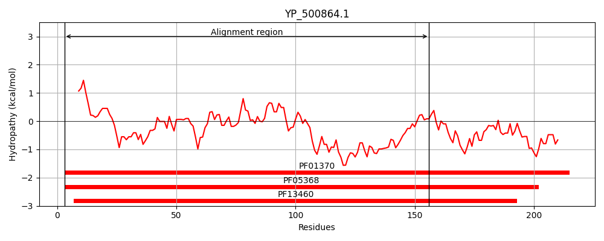
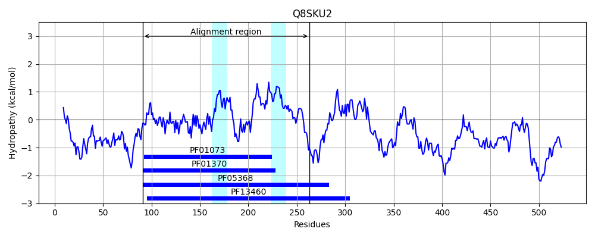
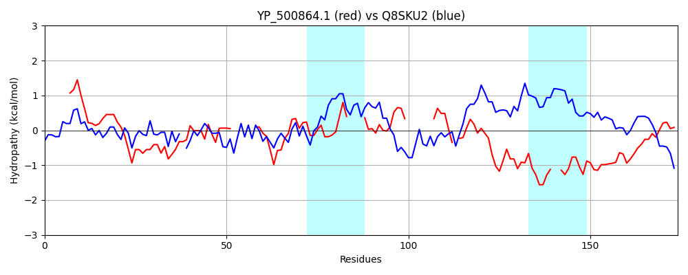

Hit Accession: Q8SKU2
Hit TCID: 3.A.9.1.1
Hit Description: gnl|BL_ORD_ID|16784 gnl|TC-DB|Q8SKU2|3.A.9.1.1 Tic62 protein precursor - Pisum sativum (Garden pea).
Mach Len: 174
e:0.000001
Query TMS Count : 0
Hit TMS Count: 2
TMS-Overlap Score: 0.000000
Predicted Substrates:CHEBI:8526;protein polypeptide chain
BLAST Alignment:
Score: 113 , Bit scores: 48 bits, E-value: 1.1e-06, Alignment length: 174, Percentage identity: 25
Query: 3 ILVIGANGGVGSLLVQQLAKENVPFTAGVRQSDQLNALKSQGMKAILVDVEN------DSIETLTETFKPFDKVIFSVGSGGNT----GADKTIIVDLDG-------AVKSMI-ASKEANIKHYVMVSTYDSRRQAFDDS--GDLKPYTIAKHYADDYLRRSGLNYTILHPGAL 156
+ V GA G VGS V++L K AGVR + + AL Q +K + +D + + +E + + D++ ++G+ GA + I D+ G A K+++ A+ A + H+++V++ + + + I K A++ L SG+ YTI+ PG +
Sbjct: 91 VFVAGATGKVGSRTVRELIKLGFKVRAGVRNAQKAGAL-VQSVKQLKLDGASGGGEAVEKLEIVECDLEKADQIGSALGNASTVICAIGASEKEIFDITGPCRIDYRATKNLVDAATVAKVNHFILVTSLGTNKFGLPAAILNLFWGVLIWKRKAEEALLASGIPYTIVRPGGM 263 | Protein Hydropathy Plots: |
|---|
|  |  |
Pairwise Alignment-Hydropathy Plot:
|
|---|
|  |